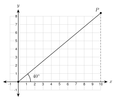
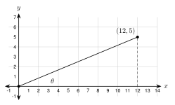

6.2 - The Trigonometric Ratios
A ramp rises \(1\) foot for every \(12\) feet of ground it covers. A roof rises \(6\) inches for every \(12\) inches across. A road climbs \(6\) feet for every \(100\) feet of flat ground.
All three are right triangles. In each one, the ratio of two sides tells how steep the slope is. Steeper slopes have bigger ratios. In this lesson you learn three ratios that connect the angles of a right triangle to its sides. They are the foundation of trigonometry.
Printable Guided Notes for this lesson (fill-in notes to print and write on)
🔥 Warm Up
Two right triangles each have a \(35^\circ\) angle. Are they similar? Say why.
Find the hypotenuse of a right triangle with legs \(6\) and \(7\). Give the exact answer.
Write \(\dfrac{3}{8}\) as a decimal, rounded to the nearest thousandth.
👥 Learn Together
6.2.1 - Naming the Sides
Choose one acute angle in a right triangle. The three sides get names that depend on that angle.
- The hypotenuse is across from the right angle. It is always the longest side.
- The opposite side is across from the angle you chose. It does not touch the angle.
- The adjacent side is next to the angle you chose. It is the leg that touches the angle (the hypotenuse touches it too, but it is not called adjacent).
Now choose the other acute angle. The names of the two legs trade places.
The hypotenuse never changes. The opposite and adjacent sides change when you pick a different angle. Always say which angle you are using.
Example 1: Name the sides
For angle \(A\), name the side with length \(8\), the side with length \(15\), and the side with length \(17\).
\(BC = 8\) is across from \(A\), so it is opposite. \(AC = 15\) touches \(A\), so it is adjacent. \(AB = 17\) is the hypotenuse.
Now use angle \(B\). Which side is opposite? Which is adjacent?
\(AC = 15\) is across from \(B\), so it is opposite. \(BC = 8\) touches \(B\), so it is adjacent.
For angle \(B\), which side is the hypotenuse?
The side of length \(8\) is adjacent to which angle?
\(\overline{AB}\), with length \(17\). The hypotenuse is the same for both acute angles.
Angle \(B\).
6.2.2 - Why the Ratios Work
Look at three right triangles that share the \(35^\circ\) angle at \(A\). The figure is drawn to scale.

All three triangles have a \(35^\circ\) angle and a right angle. By AA similarity (Lesson 5.3), they are similar. Similar triangles have equal ratios for matching sides. Here are the measurements, to the nearest hundredth.
| Triangle | Adjacent | Opposite | Hypotenuse | Opposite \(\div\) Hypotenuse | Opposite \(\div\) Adjacent | Adjacent \(\div\) Hypotenuse |
|---|---|---|---|---|---|---|
| \(\triangle AB_1C_1\) | \(4\) | 2.80 | 4.88 | 0.57 | 0.70 | 0.82 |
| \(\triangle AB_2C_2\) | \(8\) | 5.60 | 9.77 | 0.57 | 0.70 | 0.82 |
| \(\triangle AB_3C_3\) | \(12\) | 8.40 | 14.65 | 0.57 | 0.70 | 0.82 |
The three ratios are the same in every row. They depend only on the angle, not on how big the triangle is. A \(35^\circ\) angle always gives an opposite-to-hypotenuse ratio of about \(0.57\). That is why one angle gives one number we can look up.
6.2.3 - Sine, Cosine, and Tangent
The three ratios have names. Use the angle \(A\).
| Ratio | Name | Short form | Memory aid |
|---|---|---|---|
| \(\dfrac{\text{opposite}}{\text{hypotenuse}}\) | sine | \(\sin A\) | SOH |
| \(\dfrac{\text{adjacent}}{\text{hypotenuse}}\) | cosine | \(\cos A\) | CAH |
| \(\dfrac{\text{opposite}}{\text{adjacent}}\) | tangent | \(\tan A\) | TOA |
Say it as SOH CAH TOA: Sine is Opposite over Hypotenuse, Cosine is Adjacent over Hypotenuse, Tangent is Opposite over Adjacent.
Write each ratio as a fraction first. Then divide to get a decimal. Round only at the end.
Example 2: Ratios from the side lengths
Use the triangle in Example 1. Find \(\sin A\), \(\cos A\), and \(\tan A\). Write each as a fraction and as a decimal rounded to four places.
\[ \sin A = \frac{\text{opp}}{\text{hyp}} = \frac{8}{17} \approx 0.4706 \qquad \cos A = \frac{\text{adj}}{\text{hyp}} = \frac{15}{17} \approx 0.8824 \qquad \tan A = \frac{\text{opp}}{\text{adj}} = \frac{8}{15} \approx 0.5333 \]
Example 3: Ratios for the other angle
Find \(\sin B\), \(\cos B\), and \(\tan B\) in the same triangle.
For angle \(B\), the opposite side is \(15\) and the adjacent side is \(8\).
\[ \sin B = \frac{15}{17} \approx 0.8824 \qquad \cos B = \frac{8}{17} \approx 0.4706 \qquad \tan B = \frac{15}{8} = 1.8750 \]
Notice that \(\sin B = \cos A\). You will see why in Lesson 6.5.
Write \(\sin A\), \(\cos A\), and \(\tan A\) as fractions.
Write each as a decimal rounded to four places.
\(\sin A = \dfrac{7}{25}\), \(\cos A = \dfrac{24}{25}\), \(\tan A = \dfrac{7}{24}\)
\(\sin A = 0.2800\), \(\cos A = 0.9600\), \(\tan A = 0.2917\)
Example 4: Find the hypotenuse first
A right triangle has legs \(6\) and \(7\). Angle \(A\) is across from the leg of length \(6\). Find \(\sin A\), \(\cos A\), and \(\tan A\) to four decimal places.
Use the Pythagorean theorem for the hypotenuse: \(6^2 + 7^2 = 85\), so the hypotenuse is \(\sqrt{85} \approx 9.2195\).
\[ \sin A = \frac{6}{\sqrt{85}} \approx 0.6508 \qquad \cos A = \frac{7}{\sqrt{85}} \approx 0.7593 \qquad \tan A = \frac{6}{7} \approx 0.8571 \]
The hypotenuse is \(\sqrt{81 + 144} = 15\). So \(\sin A = \dfrac{9}{15} = 0.6\), \(\cos A = \dfrac{12}{15} = 0.8\), and \(\tan A = \dfrac{9}{12} = 0.75\).
Example 5: Error analysis
Hnin looks at the triangle in Example 1. She writes \(\sin A = \dfrac{15}{17}\). Find her mistake.
For angle \(A\), the side of length \(15\) is adjacent, not opposite. \(\dfrac{15}{17}\) is adjacent over hypotenuse, which is \(\cos A\). The correct answer is \(\sin A = \dfrac{8}{17}\).
6.2.4 - Using a Calculator
You do not need to measure a triangle to find a ratio. A scientific calculator has a \(\boxed{\sin}\) key, a \(\boxed{\cos}\) key, and a \(\boxed{\tan}\) key.
A calculator can measure angles in degrees or in radians. In this book, always use degree mode. Check your calculator: \(\sin 30^\circ\) must give \(0.5\) and \(\tan 45^\circ\) must give \(1\). If you see \(-0.9880\) for \(\sin 30\), the calculator is in radian mode. Change the mode and try again.
Example 6: Calculator values
Find each value to four decimal places.
\(\sin 35^\circ \approx 0.5736\)
\(\cos 62^\circ \approx 0.4695\)
\(\tan 71^\circ \approx 2.9042\)
Compare \(\sin 35^\circ \approx 0.5736\) with the table in 6.2.2. The table gave \(0.57\) for the same angle. The calculator is just a faster way to get the ratio.
\(\sin 18^\circ\)
\(\cos 18^\circ\)
\(\tan 64^\circ\)
\(0.3090\)
\(0.9511\)
\(2.0503\)
Look for patterns. As an angle gets bigger, its sine and tangent get bigger and its cosine gets smaller. The sine and cosine of an acute angle are always between \(0\) and \(1\) because a leg is shorter than the hypotenuse.
6.2.5 - Tangent Is Slope
Remember that slope is rise over run. In a right triangle, the opposite side is the rise and the adjacent side is the run. So
\[ \tan\theta = \frac{\text{opposite}}{\text{adjacent}} = \frac{\text{rise}}{\text{run}} = \text{slope}. \]
(The Greek letter \(\theta\), “theta,” often names an angle.)
Example 7: A line on the coordinate plane

A line passes through the origin and makes a \(40^\circ\) angle with the \(x\)-axis. What is its slope? Find the \(y\)-coordinate of point \(P\) where \(x = 10\).
The slope is \(\tan 40^\circ \approx 0.8391\). Slope is rise over run, so \(y = 10 \cdot \tan 40^\circ \approx 8.4\). Point \(P\) is about \((10, 8.4)\).
Slope \(= \tan 25^\circ \approx 0.4663\). At \(x = 20\), \(y \approx 20 \cdot 0.4663 \approx 9.3\).
Example 8: Road grade

A road climbs \(6\) feet for every \(100\) feet of flat ground. The grade of a road is the slope written as a percent. Find the grade and write \(\tan\theta\).
\[ \tan\theta = \frac{6}{100} = 0.06 \quad\text{so the grade is } 6\%. \]
\(\tan\theta = \dfrac{9}{120} = 0.075\). The grade is \(7.5\%\).
The law says a wheelchair ramp must rise at most \(1\) foot for each \(12\) feet of run. That is \(\tan\theta = \dfrac{1}{12} \approx 0.0833\), a grade of about \(8.3\%\). To rise \(3\) feet, the ramp needs \(36\) feet of run.
✍️ Practice On Your Own
Use the figure. Name the sides. In triangle \(DEF\), the right angle is at \(F\). Side \(d\) is across from \(D\), side \(e\) is across from \(E\), and side \(f\) is across from \(F\).
For angle \(D\), which side is opposite? Write the letter.
For angle \(D\), which side is adjacent?
For angle \(E\), which side is opposite?
Which side is the hypotenuse for both angles?
Write \(\sin A\), \(\cos A\), and \(\tan A\) as fractions, then as decimals to four places. Use the figure for problems 5 and 6.
Use the triangle: \(AC = 5\), \(BC = 12\), \(AB = 13\).
Same triangle. Write \(\sin B\), \(\cos B\), and \(\tan B\).
A right triangle has legs \(9\) and \(40\) and hypotenuse \(41\). Angle \(A\) is across from the leg of length \(9\).
A right triangle has legs \(12\) and \(35\). Find the hypotenuse. Then find \(\sin A\) for the angle \(A\) across from the leg of length \(35\).
Use a calculator in degree mode. Round to four decimal places.
\(\sin 20^\circ\)
\(\cos 20^\circ\)
\(\tan 20^\circ\)
\(\sin 55^\circ\)
\(\cos 55^\circ\)
\(\tan 55^\circ\)
\(\sin 80^\circ\)
\(\cos 80^\circ\)
\(\tan 12^\circ\)
Think about the ratios.
What is \(\tan 45^\circ\)? Why does a \(45^\circ\)-\(45^\circ\)-\(90^\circ\) triangle give this answer?
Which is larger, \(\sin 10^\circ\) or \(\sin 80^\circ\)? Check with a calculator.
Can \(\sin A\) ever be greater than \(1\) for an acute angle \(A\) in a right triangle? Explain.
Tangent is slope. Use the figure for problem 21.

Look at the grid figure. The line through the origin and \((12, 5)\) makes angle \(\theta\) with the \(x\)-axis. Find \(\tan\theta\) as a fraction and a decimal to four places.
A line through the origin makes a \(30^\circ\) angle with the \(x\)-axis. What is its slope, to four places? What is \(y\) when \(x = 12\), to the nearest tenth?
A road climbs \(14\) feet over a flat distance of \(175\) feet. Find \(\tan\theta\) and the grade as a percent.
Real problems.
A ladder reaches \(12\) feet up a wall. Its base is \(5\) feet from the wall. The ladder makes angle \(\theta\) with the ground. Find the length of the ladder. Then find \(\sin\theta\) and \(\cos\theta\) to four places.
A roof has a \(9/12\) pitch. That means it rises \(9\) inches for every \(12\) inches of run. Find \(\tan\theta\). How many feet does the roof rise over a run of \(14\) feet?
A ramp rises \(2\) feet over \(20\) feet of run. The legal limit is \(\tan\theta = \frac{1}{12} \approx 0.0833\). Is this ramp steeper than the limit? Show with \(\tan\theta\).
A skateboard ramp makes a \(25^\circ\) angle with the ground. How many feet does it rise for each \(10\) feet of horizontal run? Round to the nearest tenth.
Find the mistake.
- Samir says: “\(\cos 40^\circ \approx 0.7660\), so \(\cos 80^\circ\) must be double that, \(1.5320\).” Find his mistake. Check with a calculator.
Test practice
In right triangle \(ABC\), the right angle is at \(C\). \(AC = 21\), \(BC = 20\), and \(AB = 29\). Which fraction equals \(\sin B\)?
A. \(\dfrac{20}{29}\)
B. \(\dfrac{21}{29}\)
C. \(\dfrac{20}{21}\)
D. \(\dfrac{21}{20}\)A line passes through the origin and makes a \(50^\circ\) angle with the positive \(x\)-axis. Which number is closest to the slope of the line?
A. \(0.6428\)
B. \(0.7660\)
C. \(1.1918\)
D. \(50\)
Challenge
In a right triangle, \(\sin A = \dfrac{20}{29}\). Draw the triangle and label two sides. Find \(\cos A\) and \(\tan A\) as fractions. Hint: use the Pythagorean theorem.
A calculator gives \(\tan 85^\circ \approx 11.4301\). Describe the right triangle. What is true about its opposite and adjacent sides?